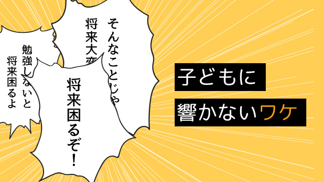

将来困るぞ！
これは親が子に言う常套句の一つです。
「勉強しないと将来困るよ。」「そんなことじゃ将来大変になるぞ。」「お前の将来を思うからこそ言うのだが…。」
たいていの親の皆さんは、一度や二度我が子にこんなことを言ったことがあると思います。
実は、私はよく言われました（笑）。
日本人でこのような言葉を親から言われたことがない人など、恐らくほとんどいないのではないでしょうか。
それくらいこのセリフは、親が子に向かって言うポピュラーな決まり文句です。常套句ナンバーワンといってよいでしょう。
面白いのは、このセリフを言っている親もまた自分の親から言われていたし、その親はさらにその親から…というように歴代の子どもはずっと親から言われ続けてきたということです。
結論から述べると、この「将来困るぞ」というセリフはほとんど効果はありません。
少なくとも私は今の子どもたちがこの言葉を聞いて発奮し、心を入れかえて勉強するなりやる気を出したなどという例はただの一度も見たことがありません。
これほど長い間使われ続けてきたにもかかわらず、これほど効果のない言葉というのも珍しいと思います。
なぜでしょう。
「将来困る」は代々受け継がれてきた
簡単に言うと「将来困るぞ」というお説教は、子どもの動機づけ法としてはもっとも下手なやり方だからです。
子どもというのは「今に生きている」ものです。未来という時間軸の中に生きているのじゃない。
子どもにとって、たとえば勉強は楽しいものではありません。今というこの瞬間を楽しみたい子どもにとって、将来に備えてという打算的な思考はなじめないものです。
これはいつの時代でもそうなのです。
大人は「今の楽しみより将来の利益」を優先的に考えます。
つまり「将来に備えて」という発想自体が大人特有のものであって、それは子どもの心を動かすものではありません。
だから、子どもに勉強を促す（動機づける）手段として「将来困るぞ」と言うことは、大人が思うほど子どもの心に響かないのです。
大人は利害得失を計算します。子どもは、特に小中学生のうちは今が楽しいかどうかが大事。
確かに思い返してみると、高度経済成長期の1960年代ころまでは一生懸命勉強して少しでも上の学校へ行くこと。学歴を身につけることは、そうでない場合と比べて大きく差がつく「現実」があり、子ども心にも「将来に備えて勉強しないと大変だ」という意識はありました。ある意味分かりやすい時代だったわけです。
しかし現在のような「学歴インフレ」の時代では、勉強ができること、高い学歴をつけること、さらには大企業や有名企業に勤めることそのものがイコール社会的成功とは限らないし、まして幸福と結びつくわけではない。
何が自分を活かす道であるか。何が幸せな人生を歩む条件なのか。それらは一人ひとりが自分の価値観を基に決めることであって、あらかじめ外側から条件づけられているものではない。
ですから今の時代「将来困るぞ」という言葉はすでに使い古された死語になってしまった。
そう言えるでしょう。
それなのに、もし親であるあなたが我が子が「勉強しない」「やる気を見せない」からといって、将来困るんだからと言う言葉を使っているのならそろそろやめたほうが良い。
それは、あなた自身が親から言われ続けたことをオウム返しに繰り返しているに過ぎないのかも知れないからです。
将来より今の充実こそが大事
将来困るぞという文言が効果がないのなら、親はそれに代わるどんな言葉を子どもにかければ良いのでしょう。
「お前ならできる！」「あんたはやればできるんだからもう少しガンバって見たら？」
そう言って励ませば良いのでしょうか。
残念ながらこれらの「常套句」もやはり効果はないでしょう。
それならばどう言えばいいの！？
子どもがやる気になる効果的な言葉を教えて！
どう扱えば子どもはやるようになるの！？
そんな切実な親御さんの声が聞こえてくる気がします。いや実際何度も聞いてきたのですが…。
先に答えを言うなら、そんな魔法の言葉はありません。誰にでも一律に当てはまる効果的な言葉などないのです。
まず最初に分かって欲しいのは「子どもをやる気にさせるにはどうすればいいのか」という親の発想そのものに疑問をもつべきだということです。
子どもに○○させるにはどうすれば…
その発想自体が、子どもを特定の方向へ誘導しようとするコントロール欲求の表われなのです。「子どものため」という思いは分かりますが、子どもの方は親のコントロール欲求に敏感に気づくので従うより、まず反発する気持ちの方が強く出てしまいます。
子どもを操作する気持ちがある以上、どんなオイシイ言葉をかけたところで親の思う方向へは行かないでしょう。
むしろ反対方向へ駆け出すのがオチです。
では、どうすればいいのだ！！
まぁ、そんなに結論を急がずゆっくり考えましょう。
もっと心の中をじっとながめてみましょう。
親であるあなたは、子どもがなかなか勉強しないとかゲームばかりやっている、一生懸命努力しない、その姿を見ると心配になります。
「どうしよう。このままじゃ子どもが悪くなってしまう」などとネガティブな思いがわきます。
そうして心配のあまりアレコレ言ってしまうわけです。
しかしこれまで何度も言ってきたように、子どもの現状をマイナスと見立てた上で、そのマイナスに働きかける行為は功を奏しません。
マイナスをせいぜいゼロにするくらいで、プラスを生むことはないからです。
そこで一つ私の方から質問します。
親であるあなたは、なぜ子どもにもっと努力して欲しいと思うのでしょう。
あなた：そりゃ、ちゃんと勉強してもっと努力してマシな成績をとって欲しいと思うからですよ。
私：努力してマシな成績をとって欲しいのはナゼですか。
あなた：まぁ、それなりの学校に行ってちゃんとした生活を送って欲しいからですよ。
私：それなりの学校に行ってちゃんとした生活とは何でしょうか。
あなた：やっぱり人並み以下の生活じゃ困るし子どもには…何というか良い人生を送って欲しい。
私：お子さんに「良い人生」を望んでいるのですね。
あなた：そりゃあ、子どもに良い人生を期待しますよ。当然でしょ？
私：良い人生とは経済的にも恵まれ仕事や家庭生活も充実しているということですか。
あなた：特別金持ちとかじゃなくても、そこそこいい条件で仕事や家庭にも恵まれる…そんな人生ですかね。幸せな人生…
私：幸せ！ 幸せな人生をお子さんに望んでいるわけですね。では。あなたの真の望みは子どもの幸せということになりますね。
そうです。親であるあなたは子どもに幸せになって欲しいと願っている！
それならシンプルにその思いを伝えれば良いのではないでしょうか。直接伝えなくても、子どもへの眼差し、言動の端々にそれがあれば、要するに愛があれば子どもは汲み取るものです。
良い成績。良い学校。見栄えのする就職先。
それらは幸福を保証するものではなく、外形的条件の一つに過ぎません。
それは冷静に考えれば分かることなのに、親はつい子どもの将来への心配を盾にして「子どもの今」に制限を加えようとする。
それは「将来の利益」のために今を犠牲にする、将来のために今を耐えるという産業社会特有の考えから来たものです。
しかしこの考え方では幸せになりません。
なぜなら「今を犠牲にする」姿勢からは、「今が不幸だ」しか生まれてこないからです。
ずーっと「今は不幸だ」が続いてしまう。
「今ガンバらないと将来困るぞ」という言葉には「今と言うものは苦しむためにある」というメッセージが込められています。
なので本当はこう言うべきです。
将来困るぞ → 今を楽しめ！
勉強にスポーツに。友達との交遊にトラブルで悩むことに。人を好きになることに。
全てに全力で楽しめ。全てを充実させよ。
そして親であるあなた自身も充実した今を生きる。そして幸せとは常に「今を充実させる」ことでしか実現できないと伝える。
これがもっとも大切なメッセージではないでしょうか。
今を充実させること！ 充実した今を楽しむこと。
それは勉強をガンバることかもしれない。
友人と夢中で遊ぶことかもしれない。時には勉強そっちのけでゲームに没頭したり考え事に浸ることかもしれない。
それは他人から見れば、すごい努力だったり苦労しているように見えるかもしれないが実は本人は、そんな努力や苦労も楽しんでいる場合もあるのです。
だから子どものすべきことを、特定の型にはめて判断せず「将来ではなく今の充実」こそが大切であり、幸せへ直結しているのだと広い心で我が子に接してください。
「将来」を持ち出して「今を犠牲」にすることなく「今の充実」の延長にこそ「将来の幸せ」がある！
このように発想を転換してみましょう。
お子さまの幸せ
それこそがあなたの望みであるはずです。